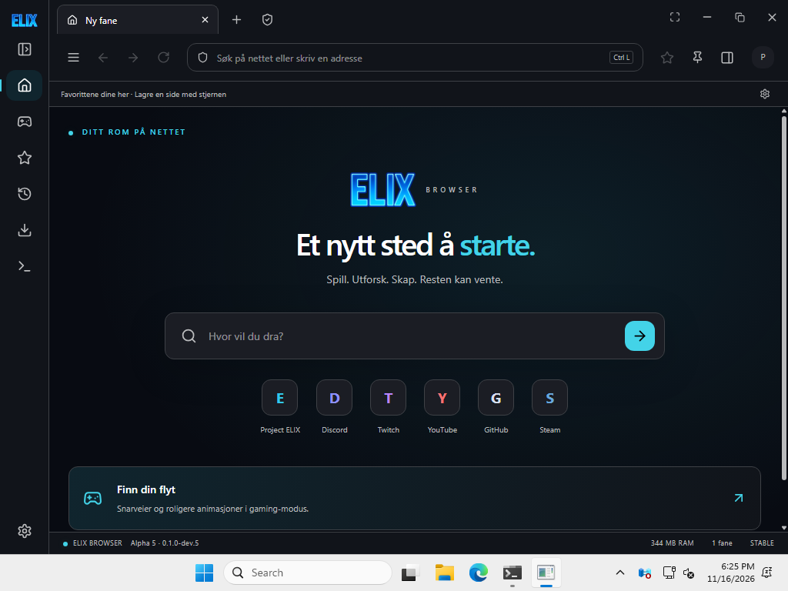

En fane til.
Uten rotet.
Adressefelt, navigasjon, bokmerker og historikk. Egne profiler holder cookies og nettleserdata adskilt.
Et rent skrivebord på nettet. ELIX samler surfing, gaming og utviklerverktøy i ett rolig, mørkt grensesnitt.
Alpha 1 er tilgjengelig for Windows x64. Ingen egen server nødvendig.

Adressefelt, navigasjon, bokmerker og historikk. Egne profiler holder cookies og nettleserdata adskilt.
Gaming-dashboard med snarveier og en modus som reduserer animasjoner i ELIX. Valgfri dvale frigjør nettvisninger.
Lokale bokmerker, historikk og innstillinger. Ingen automatisk opplasting av diagnostikk eller surfehistorikk.
Aktiver Developer Mode og åpne nettsidens egne WebView2 DevTools. Inspiser DOM og CSS, feilsøk JavaScript og følg nettverkstrafikken.
Tilgjengelig for alle som slår det på i innstillingene.
↳ Ressursmålinger
Test ELIX på din egen Windows-PC. Nettleseren kjører lokalt og trenger ingen ELIX-server.
0.1.0-dev.1 · Utgitt 16. november 2026 · Windows x64
Publisert og kontrollert. Utgivelsesnotater og SHA-256 ↗
Alpha-utgaven har ekte surfing og lokal lagring. Automatiske ELIX-oppdateringer er foreløpig deaktivert; nye versjoner installeres manuelt. Programmet er ikke Authenticode-signert, så Windows kan vise «ukjent utgiver» eller SmartScreen. Dette er en tidlig testversjon.
Nedlasting er ikke åpnet.
Sjekker offisiell utgivelseskanal …
Windows 11, 64-bit (x64). Microsoft Edge WebView2 Evergreen Runtime. Installasjonsprogrammet henter runtime ved behov. Nettforbindelse kreves for dette.
ARM64, andre operativsystemer og maskinvareminimum er ikke kvalifisert i første versjon.
Alpha 1 · 0.1.0-dev.1 · 16. november 2026 Første offentlige Windows-testversjon: native faner og navigasjon, bokmerker, historikk, profiler, nedlastinger, gaming-startside og ekte DevTools. Ingen egen server kreves. Automatiske ELIX-oppdateringer er deaktivert i alphaen. Stabil utgivelse kommer etter videre testing.
Stable er for ordinære utgivelser. Beta gir tidlig tilgang og kan ha feil. Developer er eksperimentell. Alle offisielle oppdateringer må være digitalt signert. Et kanalbytte nedgraderer ikke en nyere installert versjon.
Utvidelser, privatmodus, passordbehandling, flere hovedvinduer, nettsidetillatelser for kamera og mikrofon, automatisk krasjinnsending og ressursmålinger per fane er ikke implementert. Dvale laster siden på nytt og kan miste ulagrede skjemaer. Full Windows-akseptansetest og oppdatering fra 0.1.0 til 0.1.1 må være fullført før stabil lansering.
ELIX lagrer historikk, bokmerker, innstillinger og profildata lokalt. WebView2 lagrer blant annet cookies og nettsteddata i den valgte profilen. Nettsider du besøker, Google ved søk, Microsoft ved runtime-installasjon og GitHub ved oppdateringssjekk mottar nødvendige nettverksforespørsler, inkludert IP-adresse.
Ingen automatisk telemetri eller opplasting av historikk. Diagnostikk kan eksporteres lokalt etter samtykke og inneholder systemversjoner, ressursmålinger og faste hendelseskoder. Eksporten utelater URL-er, cookies, profilnavn og lokale stier. Du avgjør selv om filen skal deles.
Dette er produktets tekniske personverninformasjon under utvikling. Endelig informasjon om behandlingsansvarlig og kontaktpunkt må ferdigstilles før stabil lansering.
Rust håndterer applikasjonslogikk, lagring og systemintegrasjon. WebView2 står for nettsider og JavaScript. Rust i seg selv gjør ikke nettsider raskere enn Chromium. Vi publiserer ingen sammenligningstall før de er målt under like forhold.
Tauri-oppdateringssignaturer beskytter oppdateringspakken. De er noe annet enn Windows Authenticode. Windows kan vise en SmartScreen-advarsel for bygg uten etablert utgiversignatur.